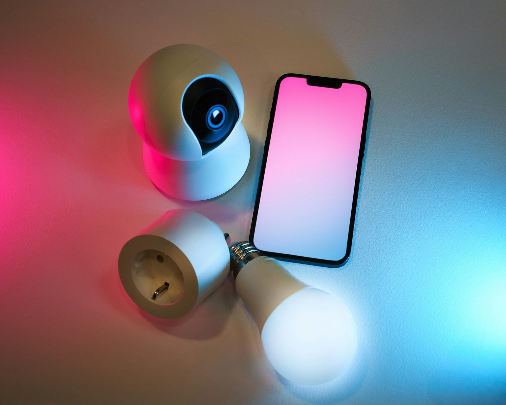

04 / IOT & SMART HOMES
Connected devices.
A joined-up plan.
Sensors, controls and smart devices are most useful when they fit the wider system. Explore connected technology for farms, properties and homes.
- Farm & property sensors
- Discuss what you want to measure or monitor and the connection each device will need.
- Smart-home technology
- Explore how lighting, controls and other compatible devices could work together.
- Integration planning
- Consider compatibility, power, data access and ongoing management before adding equipment.